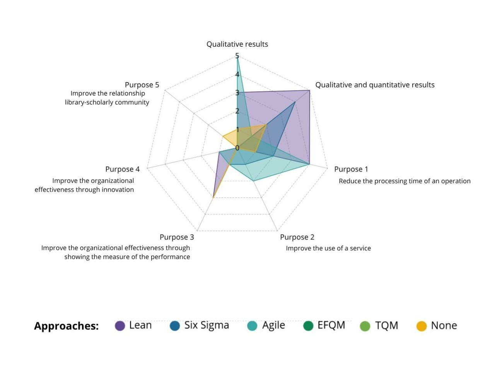

Introduction
This website presents three exercises developed during the course "Introduction to Digital Humanities".
The activities allowed me to explore different Digital
Humanities approaches, tools and methods, and to reflect
on their possible connections with my research on
Operational Excellence in academic libraries (Exercise 1).
The process can be seen as an evolution from Excel-based data organisation, to a static graph that makes relationships visible, then to an interactive network visualisation that enables users to explore those relationships (Exercise 2), and ultimately to Design Thinking, where the visualisation becomes part of an iterative, human-centred process of exploration, interpretation, reflection, and reframing (Exercise 3).
Digital Humanities and Operational Excellence
This exercise asks to define what the Digital Humanities mean to me in one minute.
Video
Reflection
I study Digital Humanities (DH) in relation to Operational Excellence (OpEx), a management philosophy. Although these fields may seem very different, they share important common ground.
For me, two themes particularly highlight the strong connection between Digital Humanities and Operational Excellence.
First, the concept of value. The value of a digital object does not lie in the object itself, as it often does for a physical one, but in what we can do with it.
The same applies to OpEx: it offers a wide range of tools, methods, and frameworks that help us ask new questions and better understand reality.
Their true value lies not in the tools themselves, but in how we use them. They become meaningful only when they improve human experience and create positive change.
Second, the interpretation of reality. Neither DH nor OpEx aims to reduce everything to data, even though both disciplines can sometimes be
misunderstood as being purely quantitative. Instead, they offer methods and perspectives for interpreting reality to create transformation, whether by deepening our understanding of cultural heritage
or by improving organizations and how they serve people.
Visualising a Literature Review
This exercise presents a visual exploration of my literature review on Operational Excellence experiments, practices and strategies in academic libraries.
PHASE 1 → WHAT
Mapping OpEx approaches & outcomes
This first visualisation provides an initial overview of the literature review.
It shows which OpEx approaches are referenced in the academic library experiences analysed,
and relates these approaches to the type of results reported in the studies, distinguishing between qualitative and quantitative outcomes.
This static radar chart was created in Excel.

PHASE 2 → WHERE
Mapping the geographical dimension
This second visualisation builds on the initial overview by introducing a more interactive and exploratory perspective. The map shows where the academic library experiences identified in the literature review were carried out and which OpEx approaches were adopted in different geographical contexts. Created with Flourish, it allows the data to be explored interactively, moving from a static representation towards a more dynamic view of the relationships between geographical context, library experience and OpEx approach.
Where were OpEx experiments in academic libraries conducted, and which approaches were adopted in those geographical contexts?
PHASE 3 → HOW
Mapping relationships & connections
This third visualisation takes the analysis one step further by exploring the relationships between the academic library experiences identified in the literature review and the OpEx approaches they adopted. Moving from the descriptive overview of Phase 1 and the geographical perspective of Phase 2, this interactive network visualisation focuses on the connections within the dataset. Created with Flourish, following this tutorial "Build a simple network graph with Flourish" by Miriam Posner, it allows the relationships between library experiences and OpEx approaches to be explored dynamically.
How are all these elements (studies, approaches and Countries) connected?
Related publication
The literature review and the methodology underlying the data collection are described in:
Marzocchi, S., Carvalho, J. D., & Sousa, R. M. (2026). Operational excellence experiments, practices,
and strategies in academic libraries. Business Information Review.
Design Thinking
This exercise presents my reflections on a podcast about Design Thinking:
dariahTeach - How to Practice Design Thinking and Making by Guido Stompff
The network graph as a thinking artefact: the visualisation is not simply the final representation of data;
it becomes an artefact through which to think, question assumptions, discuss relationships, and generate new interpretations.
From data representation to knowledge production, the progression Excel → static graph → interactive network visualisation → Design Thinking
can be understood not merely as a technological evolution, but as an evolution in how knowledge is explored, interpreted, and produced through data.